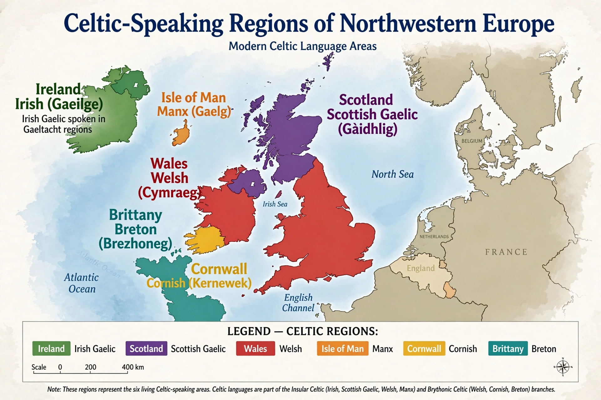

| Celtic languages | |
|---|---|
| Geographic distribution | Formerly across Europe; now Ireland, Scotland, Wales, Brittany, Isle of Man, Cornwall |
| Family | Indo-European |
| Proto-language | Proto-Celtic |
| Branches | Continental Celtic (extinct); Insular Celtic: Goidelic and Brittonic |
| Living languages | Irish, Scottish Gaelic, Manx, Welsh, Cornish, Breton |

The Celtic languages are a branch of the Indo-European language family, descended from Proto-Celtic. Once spoken across much of Europe — from the Iberian Peninsula and Gaul to the Balkans and Anatolia — they are today confined to fringes of northwestern Europe: Ireland, Scotland, Wales, Brittany, the Isle of Man, and Cornwall.
Celtic is conventionally divided into the extinct Continental Celtic languages, including Gaulish, Celtiberian, Lepontic, and Galatian, and the Insular Celtic languages of Britain and Ireland. Insular Celtic is further divided into the Goidelic branch (Irish, Scottish Gaelic, and Manx) and the Brittonic branch (Welsh, Cornish, and Breton). An alternative P-Celtic/Q-Celtic classification groups the branches according to the fate of the Proto-Celtic labiovelar *kʷ: Brittonic and Gaulish turned it into p, while Goidelic and Celtiberian retained it as a velar.
The Celtic languages spread with cultures such as Hallstatt and La Tène during the Iron Age. Under Roman rule the continental languages died out, while the insular languages survived in Ireland and western Britain, producing some of the earliest vernacular literatures in Europe. From the Middle Ages onward, the spread of English and French steadily reduced the Celtic-speaking territories.
Welsh is the most robust of the living Celtic languages, with hundreds of thousands of speakers and official status in Wales. Irish and Scottish Gaelic are supported by government policy but remain minority languages; Manx, whose last native speaker died in 1974, and Cornish have been revived by new generations of speakers. All six living languages are recognised in the Celtic nations framework.
Celts · Irish · Welsh · Scottish Gaelic · Celtic nations